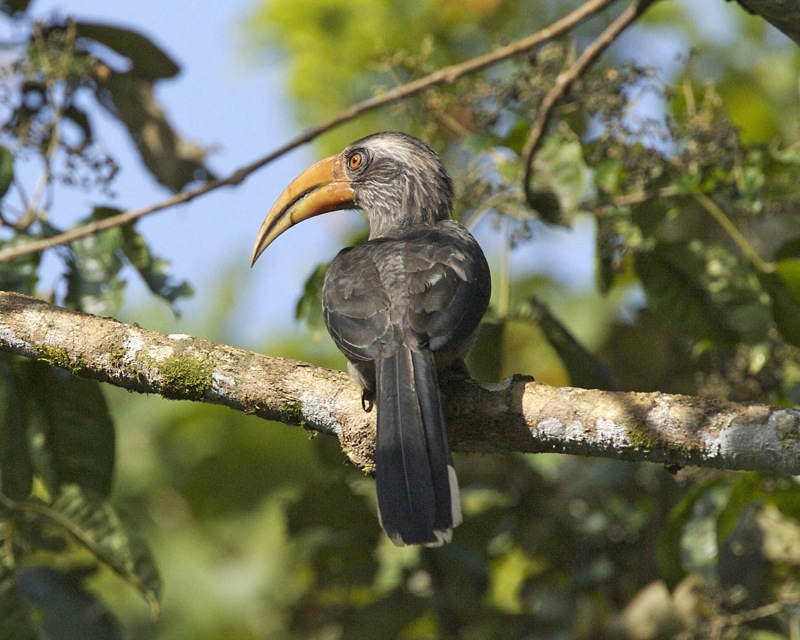
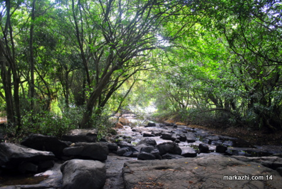

ERNAKULAM
Ernakulam, is a district of Kerala, India, that takes its name from the eponymous city division in Kochi. It is situated in the central part of the state, spans an area of about 3,000 square kilometres, and is home to over 9% of Kerala's population


THATTEKAD BIRD SANCTURY
The Thattekkad Bird Sanctuary, covering an area of barely 25 km², and located about 12 km from Kothamangalam, was the first bird sanctuary in Kerala. Salim Ali, one of the best known ornithologists, described this sanctuary as the richest bird habitat on peninsular India. Thattekkad literally means flat forest, and the region is an evergreen low-land forest located between the branches of the Periyar River, the longest river in Kerala.
PANIYELI PORU
A canopy of trees, sweet warbling birds and the crystal-clear water of a lovely river. This is Paniyeli Poru, a serene, scenic picnic spot. It forms part of the Periyar River and is located at Paniyeli, Vengoor near Perumbavoor. This little-known destination is fast attracting tourist attention. This place is now a favourite location for filmmakers, with many Malayalam, Tamil and Telugu films shot in its backdrop.
Mid-November to end of May is the best time to visit as the water flow will be reduced during this time thus exposing the rocks and whirlpools.
For adventurous travellers, a little known picnic spot, on the outskirts of Kochi, awaits you. Paniyeli Poru, near Vengoor, Perumbavoor, has natural water falls, small rivulets, offshore surrounded by rich flora and fauna, where the visitors can sit, relax and enjoy the beauty of nature. There are no restrictions, but the visitors must be cautious.
Resting by sitting on the banks of the river surrounded by dense trees is a unique experience. The sweet, melodious sound of birds, the bustling sound of water waves makes your heart, mind and body cheerful. The river Periyar flowing in between two main lands Malayattoor in the north and Paniyeli in the south, provides a panoramic view to the visitors. The hilly terrain of St. Thomas Mount, western Ghats, the famous kraal at Kodanad forms part of Paniyeli Poru

